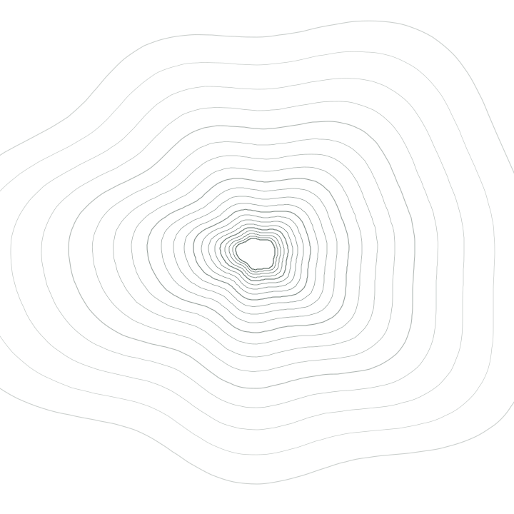

Saugat Khanal
I study how measurement error in interpolated climate data biases crop-yield models, and build spatial errors-in-variables methods to correct for it. This work sits at the intersection of spatial econometrics and agricultural climate risk.

Interpolation error, and what it costs a yield model
Saugat Khanal is a Ph.D. student in Agricultural Economics at Oklahoma State University. His research spans spatial econometrics, policy analysis, time-series econometrics, and risk, uncertainty, and insurance programs. His current work addresses interpolation-induced bias in the climate variables used to estimate crop yield response, developing spatial errors-in-variables models that correct for measurement error introduced when weather station data is interpolated onto county-level administrative units. He holds an M.S. in Agricultural Economics from Oklahoma State University and a B.Sc. in Agriculture from the Agriculture and Forestry University, Rampur, Nepal.
Read the research · Publications · Curriculum vitae
Four threads
Spatial econometrics
Hierarchical spatial errors-in-variables models, kriged interpolation surfaces, and the Modifiable Areal Unit Problem, estimated jointly through approximate Bayesian inference.
Climate–yield modeling
County-level corn yield response to growing degree days, killing degree days, and drought indices, with attention to how the climate data itself is constructed.
Policy and time-series analysis
Cointegration and error-correction modeling of macroeconomic relationships, including U.S. inward foreign direct investment under an ARDL framework.
Risk, uncertainty, insurance
Willingness to pay for agricultural insurance, rainfall index insurance design, and the basis risk that separates an index from a farmer's actual loss.
Working with
- Doctoral advisor Dr. Dayton Lambert, Sparks Chair in Agricultural Sciences, Oklahoma State University. Hierarchical Spatial Errors-in-Variables Model (HSEVM) for crop yield estimation.
- Master's advisor Dr. Courtney Bir, Associate Professor of Agricultural Economics, Oklahoma State University. Economic feasibility of wine grape production in the Southern Great Plains.
- Presented SAEA 2026 Annual Meeting, Louisville, Kentucky. WAEA 2026 Annual Meeting, Flagstaff, Arizona.
- Recognition Williams Endowed Distinguished Graduate Fellowship, 2026. Stoecker Family International Agricultural Economics Scholarship, 2026.